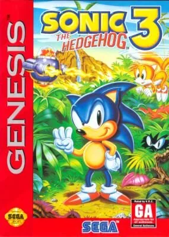

Mega Drive
Sonic the Hedgehog 3
- Año: 1994
- Desarrollador: Sonic Team
- Género: Plataformas / Acción
- Jugadores: 2 jugadores
El Death Egg del Dr. Robotnik se ha estrellado en Floating Island, llamada así porque flota en el aire gracias al poder de las Esmeraldas del Caos. Robotnik las necesita para reparar el Death Egg, así que le dice al guardián de la isla, Knuckles the Echidna, que Sonic y Tails han venido a robarlas. Con Knuckles engañado e intentando detener a los héroes a cada paso, ¿conseguirán frenar a Robotnik a tiempo?
Sonic the Hedgehog 3 es el tercer juego de la saga Sonic. Como los anteriores, es un juego de plataformas de desplazamiento lateral basado en la velocidad. Lo básico no cambia: se recogen anillos para ganar vidas extra, que también sirven de protección y salen disparados cuando golpean a Sonic. Sonic derrota a los enemigos saltándoles encima y puede hacer el Spin Dash manteniendo abajo y el salto, y soltando abajo.
La novedad de Sonic 3 son tres tipos de escudo: el de fuego (protege del fuego, pero desaparece al entrar en el agua), el de agua (permite respirar bajo el agua sin límite) y el eléctrico (atrae los anillos cercanos). Con cada escudo, Sonic puede usar una habilidad extra pulsando salto en el aire: un impulso horizontal de fuego, un rebote vertical de burbuja o un doble salto eléctrico. Sin escudo, pulsando salto en el aire activa un breve escudo de energía. Tails no puede usar las habilidades de los escudos, pero puede volar o nadar como un perrito (en el agua) durante un tiempo limitado, e incluso llevar a Sonic consigo.
Ahora hay dos tipos de fase de bonificación. A una se llega con 50 anillos o más, pasando junto a una farola de control y saltando a las estrellas (como en Sonic the Hedgehog 2). En esta fase se pueden ganar anillos, vidas y mejoras: hay una máquina de chicles gigante y, al golpear la manivela, suelta un objeto que puede ser anillos, vidas o escudos. La fase termina al caer por la parte inferior de la pantalla.
A la otra, la fase especial, más importante, se llega saltando a anillos gigantes escondidos en zonas secretas de cada nivel. En ella hay que recoger todas las esferas azules evitando las rojas (que terminan la fase antes de tiempo). Si se recogen todas las esferas azules exteriores de una formación cuadrada o rectangular, se convierten en anillos; con 50 o más en esta fase se gana una continuación. Al recoger todas las esferas azules se supera la fase y se gana una de las siete Esmeraldas del Caos.
Sonic 3 tiene seis zonas de dos actos cada una. Al final de cada acto hay un jefe que hay que derrotar para completar la fase y rescatar a los amigos animales de Sonic que Robotnik ha capturado para convertirlos en Badniks. Las zonas de Sonic 3 son unas tres veces más grandes que las de Sonic 2 y tienen varios caminos que se bifurcan.
Como en Sonic 2, hay un modo versus para dos jugadores a pantalla partida horizontal, con monitores especiales que, por ejemplo, intercambian la posición de los jugadores, hacen perder anillos o hacen aparecer un Badnik. También se puede correr contra el reloj en un modo contrarreloj.
Controles
Mando de Mega Drive: A B C abajo y, en los juegos de 6 botones, X Y Z arriba. Es el reparto general de la Mega Drive en esta máquina.
| Panel | Juego |
|---|---|
 | A |
 | B |
 | C |
 | X (solo juegos de 6 botones) |
 | Y (solo juegos de 6 botones) |
 | Z (solo juegos de 6 botones) |
 | Start |
 + +  | Salir del juego |
El panel en Mega Drive


Argumento
Recopilado de internet (2026-11-03). Lo marcado con ⚠️ no está probado en la bartop.
Tras Sonic 2, el Death Egg de Robotnik se estrella en la Isla Ángel, que flota en el cielo, y el golpe la hace caer al mar. Allí Robotnik conoce a Knuckles, el último de una antigua civilización de equidnas y guardián de la Esmeralda Maestra, que hace flotar la isla. Robotnik le engaña: le dice que Sonic quiere robarla, y así los enfrenta mientras repara el Death Egg.
Sonic y Tails llegan en su avión, el Tornado. Sonic se convierte en Super Sonic con las Esmeraldas, pero Knuckles le embosca y se las roba. Los dos cruzan la isla perseguidos por Knuckles y por Robotnik.
Final: en la base de lanzamiento luchan contra Knuckles, pero el Death Egg despega. En una plataforma unida a él vencen a Robotnik, y el Death Egg vuelve a estrellarse en la isla. La historia sigue en Sonic & Knuckles. Sin las siete Esmeraldas, tras los créditos Robotnik y Knuckles se burlan del jugador.
Fuentes
Jugabilidad
Recopilado de internet (2026-11-03). Lo marcado con ⚠️ no está probado en la bartop.
- Tipo de juego: plataformas de Sega Technical Institute (1994). Seis zonas de dos actos (ver «Guía de niveles»).
- Sonic y Tails: Tails sigue a Sonic, o lo maneja un segundo jugador. Ahora Tails vuela un rato girando las colas y puede nadar.
- Minijefe al final del primer acto y Robotnik al final del segundo.
- Guardado: al llegar a una zona nueva se guarda en una de seis ranuras.
- Escudos nuevos: de agua (respirar bajo el agua), de fuego (aguanta el fuego) y eléctrico (atrae los anillos).
- Competición: dos jugadores con Sonic, Tails o Knuckles en cinco circuitos propios, o contrarreloj en solitario.
Botones según las guías (⚠️ por confirmar)
| Mando de Mega Drive | Panel | Acción |
|---|---|---|
| A (o B o C) | B (o A o R) | Saltar |
| Abajo + saltar | Abajo + B | Spin Dash |
| Saltar en el aire (Sonic) | B en el aire | Escudo instantáneo o el poder del escudo que lleve |
| Saltar en el aire (Tails) | B en el aire | Volar un rato |
Fuentes
Guía de niveles
Recopilado de internet (2026-11-03). Lo marcado con ⚠️ no está probado en la bartop.
| Zona | Actos |
|---|---|
| Angel Island | 1 · 2 |
| Hydrocity | 1 · 2 |
| Marble Garden | 1 (minijefe con taladros) · 2 |
| Carnival Night | 1 · 2 |
| IceCap | 1 (minijefe: máquina de nieve) · 2 |
| Launch Base | 1 · 2 · jefe final |
- Bonificación (máquina de chicles): pasar un poste con 50 anillos. Se rebota por un pasillo con flippers que desaparecen para dar a un interruptor que suelta mejoras.
- Fases especiales: por anillos gigantes escondidos. Hay que poner rojas todas las esferas azules sin tocar las rojas; si se rodea un grupo de azules, se vuelven anillos. Cada una da una Esmeralda; con las siete, Super Sonic.
Fuentes
Objetos
Recopilado de internet (2026-11-03). Lo marcado con ⚠️ no está probado en la bartop.
| Monitor | Qué hace |
|---|---|
| Anillos | Protegen de los golpes |
| Invencibilidad | Un rato sin daño |
| Escudo de agua | Respirar bajo el agua |
| Escudo de fuego | Aguanta el fuego de los proyectiles |
| Escudo eléctrico | Atrae los anillos cercanos |
| 1-Up | Vida extra |
Fuentes
Trucos y secretos
Recopilado de internet (2026-11-03). Lo marcado con ⚠️ no está probado en la bartop.
Truco: prueba de sonido y selección de zona (⚠️ sin probar)
Justo cuando la pantalla se pone negra al empezar, antes del destello blanco, pulsar en el joystick: arriba, arriba, abajo, abajo, arriba, arriba, arriba, arriba. Si sale bien, suena un sonido y aparece la opción Sound Test bajo Competition. Es difícil de hacer.
Secretos
- Sonic 3 & Knuckles: en el cartucho original, Sonic 3 y Sonic & Knuckles eran un mismo juego partido en dos; conectados forman uno solo. ⚠️ En la bartop están por separado.
Fuentes
Longplay

Partida completa de la versión Mega Drive americana (1 h 2 min), de LongplayArchive: Longplay of Sonic the Hedgehog 3.
Pulsa el minuto de un nivel para ver el vídeo desde ese punto.